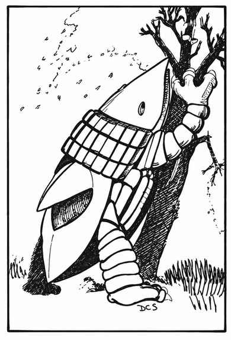

布雷特 · Bulette
 |
|
直到最近，这种恐怖生物才重新出现，人们原以为它早已灭绝。它是疯狂的魔法师将鳄龟与犰狳杂交，并注入恶魔的精血而造出的怪物。布雷特栖息于温带地区，以马、人和大多数肉类为食；它不喜欢矮人，会躲避精灵，却特别喜爱半身人，还会贪婪地把他们从地洞里挖出来。这种愚钝的怪物暴躁、永远饥饿且无所畏惧；为了吃上一两匹马，它甚至会袭击强大的队伍。
掘地时，布雷特背上的甲脊有时会破土而出，因此得名“陆鲨”。战斗时它通常以两只前足和大嘴攻击，伤害依次为 4–48／3–18／3–18 点；若被逼入绝境或受了重伤，它会以惊人的速度跃起 8 尺，四足齐出，两只后足也各造成 3–18 点伤害。
甲脊下方有一块约 1.5 平方尺的甲壳，护甲等级只有 6；激战中，怪物往往会抬起甲脊，暴露这处弱点。它的眼睛护甲等级为 4，但眼睛很小，呈约 8 寸长的椭圆形。
布雷特独居，只有交配的一对会共同占据一片领地。至今无人见过幼体，也没人知道它们如何或在哪里出生。有人猎杀过生命骰低至 6 的小型个体；也有报告称，极大的布雷特有 11 个生命骰，肩高超过 11 尺。它头后的大甲板很受珍视，熟练的矮人工匠能将其制成 +1 至 +3 的盾牌。
本节内容